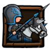
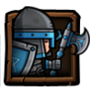

前言
1.9.1新版伤害公式（统御兵种克制系数修正） 假设攻击力A，防御力D，英雄幸运为L，克制系数K(请自行WIKI内查找)点击进入相关页面
那么一般伤害公式应为：（A - D）* K * 0.2
含暴击的伤害公式为：（A - D）* K * 0.2*[2*L%+1*（1-L%）]
p.s.奥术矛的奥术伤害不受0.2的伤害系数影响，直接造成真实伤害即 总伤害=普攻伤害+奥术伤害
p.s.黑矛的破绽击破伤害提升是最终攻击力,如英雄是含装备后的面板攻击力提升,小兵含项链和被动,出发后攻击力为(1+触发百分比%)*攻击力
实测对比
1.9之前统御伤害不受克制系数影响，1.9.1修复了这个问题，则佩戴统御的伤害公式为(以下均以80%额外伤害统御为例):
斯巴达兵种：（A - D）* K * 0.2*{2.8*（L/2+30）%+1*[1-(L/2+30)%]}
其他兵种（不自带幸运属性）：（A - D）* K * 0.2*[2.8*L/2%+1*(1-L/2%)]
重火对眩晕状态下目标伤害：（A - D）*2*K*0.2
重火在佩戴统御下伤害为：（A - D）* K * 0.2*{3.8（L/2）%+2[1-L/2%]}
说完了公式，我们来对比一下大家比较关心的问题，那就是奥术矛和黑矛到底应该带什么小兵和什么项链
以300的小兵为例吧，往上走其实差不多，因为越往后小兵攻防比越高，而且低等级比起小兵伤害你还是多关心关心英雄吧
测试环境及兵种
 黑矛11级被动破绽击破提升基础攻击力为265%，只对刺客和英雄等自带闪避属性的单位触发(提升265%,攻击力变为3.65A)
黑矛11级被动破绽击破提升基础攻击力为265%，只对刺客和英雄等自带闪避属性的单位触发(提升265%,攻击力变为3.65A)
 306 链甲兵 防御力 577克制系数 1.25 英雄幸运以国民装能达到的70为例，统御伤害均为期望伤害
306 链甲兵 防御力 577克制系数 1.25 英雄幸运以国民装能达到的70为例，统御伤害均为期望伤害
（由于笔者自身小兵为306,大家可以自行根据成长系数推算所需等级数据，仅仅是举个栗子)
长戟兵 攻击成长系数 9.1防御成长系数 1.07 306攻击力为 3048，均以英雄存活增加30%为准，基本上英雄死了，小兵也差不多了
奥术矛 70 22%
佩戴20%攻击项链 小兵攻击1.2A=3658 1.56A=4755,1.56A-D=4177, 奥术伤害 1046
对锁甲兵伤害：（A - D）* K * 0.2 +奥术伤害= 2091
佩戴80%统御项链 小兵幸运 35 1.3 A=3962,1.3A-D= 3385奥术伤害 872
对锁甲兵伤害：（A - D）* K * 0.2*{2.8*（L/2）%+1*[1-(L/2)%]} +奥术伤害= 2251
p.s.如英雄幸运为49，则两种项链伤害持平
黑矛 70 265%
佩戴20%攻击项链 小兵攻击 1.2A=3658 1.56A=4755 1.56A-D=4177 触发被动 5.694A-D=16778
对锁甲兵伤害：（A - D）* K * 0.2 = 1044
触发被动：（A - D）* K * 0.2 =4195
佩戴80%统御项链小兵幸运 35 1.3 A=3962 1.3A-D= 3385触发被动 4.745A-D=13886
对锁甲兵伤害：（A - D）* K * 0.2*{2.8*（L/2）%+1*[1-L/2%]} =1380
触发被动：（A - D）* K * 0.2*{2.8*（L/2）%+1*[1-L/2%]} =5658
p.s．相比奥矛，黑矛一般会将幸运堆到70+，可见黑矛来讲统御长戟优于攻击长戟
斯巴达 攻击成长系数 8.3防御成长系数 1.023 306攻击力为 2780,斯巴达小兵自带30幸运
奥术矛 70 22%
佩戴20%攻击项链 小兵攻击 1.2A 1.2A-D=8 奥术伤害 734
对锁甲兵伤害：（A - D）* K * 0.2*[2.8*30%+1*70%]+奥术伤害= 1796
佩戴80%统御项链 小兵幸运 65 小兵攻击 1A=2780， A-D=2203 奥术伤害 612
对锁甲兵伤害：（A - D）* K * 0.2*{2.8*（L/2+30）%+1*[1-(L/2+30)%]} +奥术伤害 =1807
p.s.奥矛斯巴达小兵由于奥术伤害低，无论哪个项链都劣于长戟
黑矛 70 265%
佩戴20%攻击项链 小兵攻击 1.2A 1.2A-D=8 触发被动 4.38A-D=11599
对锁甲兵伤害：（A - D）* K * 0.2*[2.8*30%+1*70%] = 1062
触发被动：（A - D）* K * 0.2*[2.8*30%+1*70%] = 4466
佩戴80%统御项链 小兵幸运 65 小兵攻击 1A=2780， A-D=2203 触发被动 3.65A-D=9570
对锁甲兵伤害：（A - D）* K * 0.2*{2.8*（L/2+30）%+1*[1-(L/2+30)%]} =1195
触发被动：（A - D）* K * 0.2*{2.8*（L/2+30）%+1*[1-(L/2+30)%]} =5192
p.s．统御对于黑矛无论长戟还是斯巴优于攻击，但是由于1.9.1斯巴达无法给英雄加攻bug，可考虑该版本带统御长戟
实测结论
长戟统御>长戟攻击>斯巴达统御>斯巴达攻击 长戟统御>斯巴达统御>斯巴达攻击>长戟攻击
以上仅仅是针对306级小兵，对链甲兵的伤害测定，简单对下黑矛和奥矛从数据上的选择，由于1.9.1bug，黑矛暂时无法通过斯巴达小兵增加自身攻击,当前版本仅仅只能从小兵伤害来对比两种兵种价值
综上所述，在保障英雄生存的前提下,以300级小兵为例,长戟兵配合统御都可以作为双矛的首选搭配
当然由于许多玩家选择奥矛带大斧头以及血防装保证生存,此时幸运一般在55上下,如果没有属性不错的统御,可以酌情选取皇家守卫攻击项链(防御属性)作为后补,如果对位盾兵,攻击项链效果甚至稍佳一下,可以参考下方400的数据
而黑矛配合自己堆的高幸运都是长戟统御更合适，当然下个版本bug修复后，相信斯巴达小兵佩戴统御将重新成为英雄杀手-黑矛第一选择。
p.s. 黑矛英雄一般选择高幸运装备作为首选(大部分高幸运装一般对应低回避),而黑矛自身基础回避低,时常会出现英雄死亡小兵存活的情况,在这种种情况斯巴达统御的输出要比长戟统御更稳定一些
400小兵理论数据对比
对于400满级小兵，长戟佩戴统御的优势在攻防比扩大后和高幸运装的衬托下显得更为明显，不过结论基本上相同
值得一提的是,如果奥矛幸运在55左右,400级长戟在应对盾兵上攻击项链会出现一些反转,不过差距不大就是
p.s.由于没有400小兵，仅仅作为理论参考，欢迎400小兵玩家验证。
400小兵选取了400链甲兵/圣殿骑兵和400的神殿盾兵,这些前排可能和矛兵对位的兵种(所有计算过程及数据在文尾提供,萨拉丁Buff数据由于不影响结果,仅仅后附数据)
考虑到200玩家普遍5星高幸装备比较充足,双矛幸运均以80来计算.
前排对位400兵种数据
400链甲兵 防御735 克制系数 1.25 400圣殿骑兵防御 700 克制系数1.25 400神殿盾兵878 克制系数0.75
奥术矛 80 24%
 对400链甲兵伤害： 2800 对400圣殿骑兵伤害: 2808 对400神殿盾兵伤害：2243
对400链甲兵伤害： 2800 对400圣殿骑兵伤害: 2808 对400神殿盾兵伤害：2243
 对400链甲兵伤害： 3083 对400圣殿骑兵伤害:3099 对400神殿盾兵伤害：2300
对400链甲兵伤害： 3083 对400圣殿骑兵伤害:3099 对400神殿盾兵伤害：2300
黑矛 80 300%
 对400链甲兵伤害：1338 对400圣殿骑兵伤害: 1375 对400神殿盾兵伤害：782
对400链甲兵伤害：1338 对400圣殿骑兵伤害: 1375 对400神殿盾兵伤害：782
触发被动:
 对400链甲兵伤害：5904 对400圣殿骑兵伤害: 5914 对400神殿盾兵伤害：3522
对400链甲兵伤害：5904 对400圣殿骑兵伤害: 5914 对400神殿盾兵伤害：3522
 对400链甲兵伤害：1866 对400圣殿骑兵伤害: 1881 对400神殿盾兵伤害：1083
对400链甲兵伤害：1866 对400圣殿骑兵伤害: 1881 对400神殿盾兵伤害：1083
触发被动:
 对400链甲兵伤害： 8411 对400圣殿骑兵伤害: 8426 对400神殿盾兵伤害：5010
对400链甲兵伤害： 8411 对400圣殿骑兵伤害: 8426 对400神殿盾兵伤害：5010
奥术矛 80 24%
 对400链甲兵伤害： 2387 对400圣殿骑兵伤害: 2401 对400神殿盾兵伤害：1810
对400链甲兵伤害： 2387 对400圣殿骑兵伤害: 2401 对400神殿盾兵伤害：1810
 对400链甲兵伤害：2451 对400圣殿骑兵伤害: 2470 对400神殿盾兵伤害：1764
对400链甲兵伤害：2451 对400圣殿骑兵伤害: 2470 对400神殿盾兵伤害：1764
黑矛 80 300%
 对400链甲兵伤害： 1362 对400圣殿骑兵伤害: 1375 对400神殿盾兵伤害：784
对400链甲兵伤害： 1362 对400圣殿骑兵伤害: 1375 对400神殿盾兵伤害：784
触发被动:
 对400链甲兵伤害： 6296 对400圣殿骑兵伤害: 6309 对400神殿盾兵伤害： 3745
对400链甲兵伤害： 6296 对400圣殿骑兵伤害: 6309 对400神殿盾兵伤害： 3745
 对400链甲兵伤害： 1596 对400圣殿骑兵伤害: 1616 对400神殿盾兵伤害：909
对400链甲兵伤害： 1596 对400圣殿骑兵伤害: 1616 对400神殿盾兵伤害：909
触发被动:
 对400链甲兵伤害：7630 对400圣殿骑兵伤害: 7650 对400神殿盾兵伤害：4530
对400链甲兵伤害：7630 对400圣殿骑兵伤害: 7650 对400神殿盾兵伤害：4530
其他统御热门兵种
法师小兵在攻防比大于1.4左右，即：
我方攻击力/对方防御力>1.4,幸运70以上就可以上统御了
然而在实际游戏中,100级英雄升级战法小兵以后（200兵等），即使是50幸运也都可以上，因为攻击力成长远高于肉盾防御成长
但是保险起见,早期面对高防英雄还是可能出现破不了防，比如苍蝇,极防白盾国王，所以谨慎起见前期低幸运还是上攻击,后期攻击远高于防御,统御直接拿上
p.s. 以上针对法师项链推荐仅仅是基于小兵伤害,但是后排法师不像前排菜刀,更多的是保障输出环境,所以对很多技能型英雄,如梅林,还是攻击距离项链更优
从伤害来看,只要是英雄幸运在40以上(好像毕业装都在吧),就放心大胆的上统御吧
修正小兵暴击及统御暴击伤害系数不受克制系数的bug后,船长作为一颗版本之星冉冉升起,稳坐伤害榜前列
萨拉丁是搭配船长路还是双矛路?
我下面有给出400小兵的数据,从数据上看在双方都能保证生存的情况下,萨拉丁对双矛的输出提升明显要高于船长
以长戟统御的奥矛为例,对锁甲兵伤害从3099提升到了4458,十分夸张的一个数字(奥术伤害及基础伤害双Buff,且攻击基数高)
而重火枪的提升相较于奥矛自然略逊一筹,当然火枪基本可以保证打满50秒的全额输出和菜刀不好直观横向对比,所以以上结论仅供参考,请读者自行取舍
p.s.别忘了还有贞德这个啦啦队长在呢,双路buff那奥矛伤害,是真恐怖(萨拉丁一队眩晕+火枪,贞德一队双矛,保护工作做好那伤害杠杠的)
p.s.萨奇,苍蝇等靠技能吃饭的英雄还是带射程保障生存和技能释放比较好,现在也就船长合适了
以上为大家关心比较多的，其他更全面的兵种详细评测，敬请期待